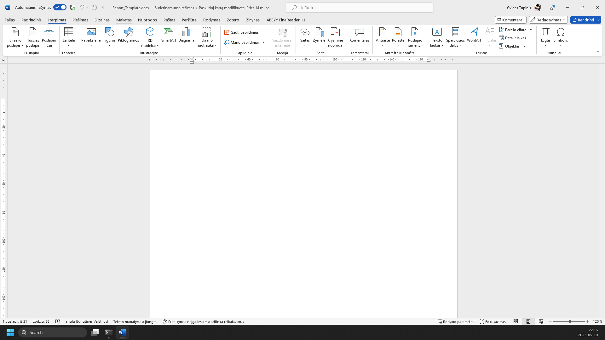
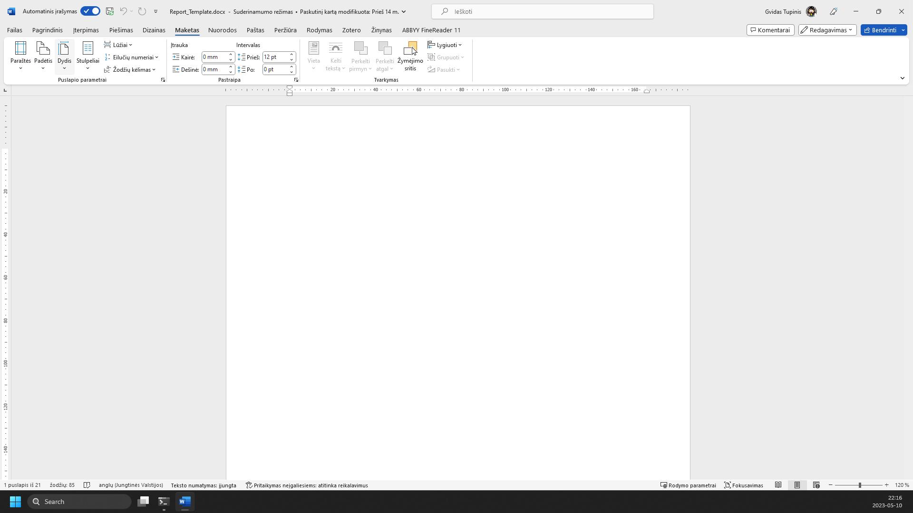
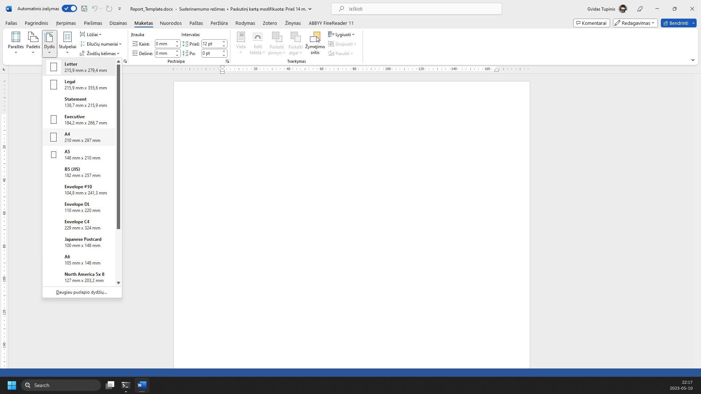

RAŠTO DARBO RENGIMAS
Puslapio dydis
1 žingsnis iš 3
1.
Spauskite meniu pasirinkimą „Maketas“

2.
Įrankių juostoje pasirinkite „Dydis“

3.
Spauskite „A4“

Žaliai apibrėžta vieta rodo, kur paspausti. Vaizdą gali padidinti naršyklės mastelio valdikliu. Žingsnius taip pat keičia klaviatūros rodyklės.